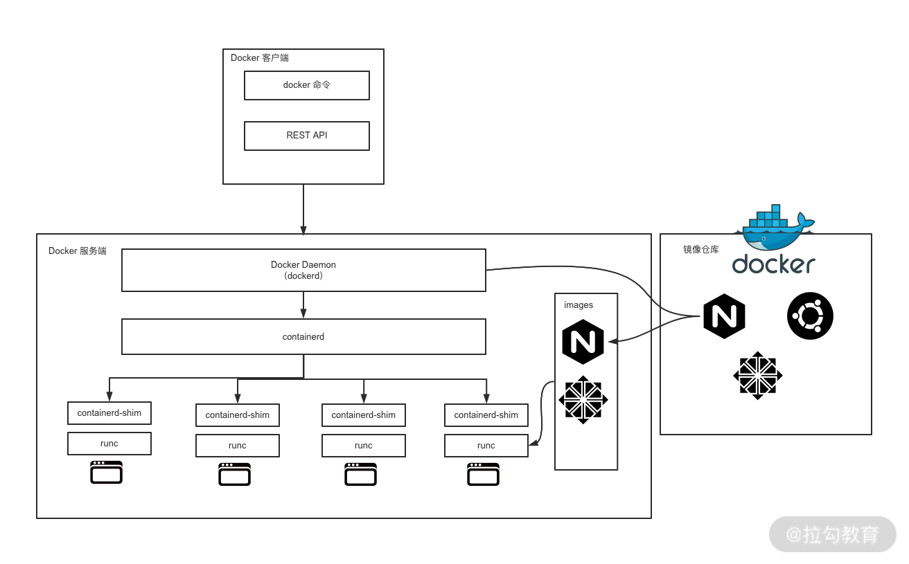
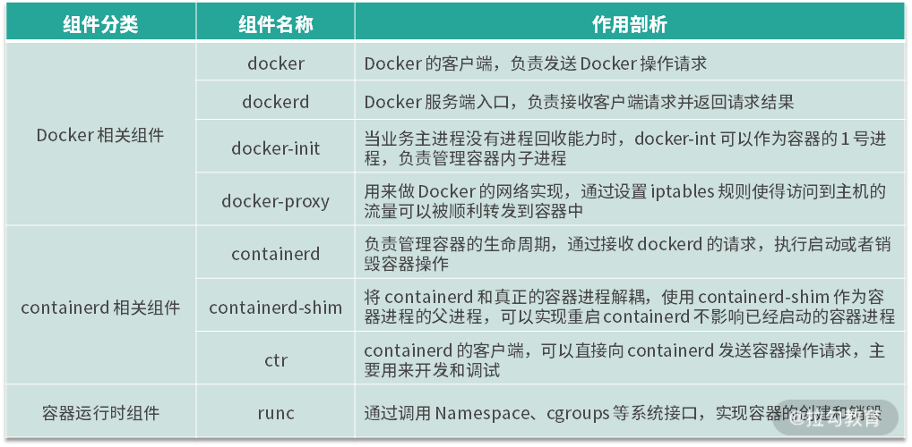

- 00 溯本求源，吃透 Docker！.md.html
- 01 Docker 安装：入门案例带你了解容器技术原理.md.html
- 02 核心概念：镜像、容器、仓库，彻底掌握 Docker 架构核心设计理念.md.html
- 03 镜像使用：Docker 环境下如何配置你的镜像？.md.html
- 04 容器操作：得心应手掌握 Docker 容器基本操作.md.html
- 05 仓库访问：怎样搭建属于你的私有仓库？.md.html
- 06 最佳实践：如何在生产中编写最优 Dockerfile？.md.html
- 07 Docker 安全：基于内核的弱隔离系统如何保障安全性？.md.html
- 08 容器监控：容器监控原理及 cAdvisor 的安装与使用.md.html
- 09 资源隔离：为什么构建容器需要 Namespace ？.md.html
- 10 资源限制：如何通过 Cgroups 机制实现资源限制？.md.html
- 11 组件组成：剖析 Docker 组件作用及其底层工作原理.md.html
- 12 网络模型：剖析 Docker 网络实现及 Libnetwork 底层原理.md.html
- 13 数据存储：剖析 Docker 卷与持久化数据存储的底层原理.md.html
- 14 文件存储驱动：AUFS 文件系统原理及生产环境的最佳配置.md.html
- 15 文件存储驱动：Devicemapper 文件系统原理及生产环境的最佳配置.md.html
- 16 文件存储驱动：OverlayFS 文件系统原理及生产环境的最佳配置.md.html
- 17 原理实践：自己动手使用 Golang 开发 Docker（上）.md.html
- 18 原理实践：自己动手使用 Golang 开发 Docker（下）.md.html
- 19 如何使用 Docker Compose 解决开发环境的依赖？.md.html
- 20 如何在生产环境中使用 Docker Swarm 调度容器？.md.html
- 21 如何使 Docker 和 Kubernetes 结合发挥容器的最大价值？.md.html
- 22 多阶级构建：Docker 下如何实现镜像多阶级构建？.md.html
- 23 DevOps：容器化后如何通过 DevOps 提高协作效能？.md.html
- 24 CICD：容器化后如何实现持续集成与交付？（上）.md.html
- 25 CICD：容器化后如何实现持续集成与交付？（下）.md.html
- 26 结束语 展望未来：Docker 的称霸之路.md.html
11 组件组成：剖析 Docker 组件作用及其底层工作原理
首先我们来回顾一下 Docker 的组件构成。
Docker 的组件构成
Docker 整体架构采用 C/S（客户端 / 服务器）模式，主要由客户端和服务端两大部分组成。客户端负责发送操作指令，服务端负责接收和处理指令。客户端和服务端通信有多种方式，即可以在同一台机器上通过UNIX套接字通信，也可以通过网络连接远程通信。

图1 Docker 整体架构图
从整体架构可知，Docker 组件大体分为 Docker 相关组件，containerd 相关组件和容器运行时相关组件。下面我们深入剖析下各个组件。
Docker 组件剖析
Docker 到底有哪些组件呢？我们可以在 Docker 安装路径下执行 ls 命令，这样可以看到以下与 Docker 有关的组件。
-rwxr-xr-x 1 root root 27941976 Dec 12 2019 containerd
-rwxr-xr-x 1 root root 4964704 Dec 12 2019 containerd-shim
-rwxr-xr-x 1 root root 15678392 Dec 12 2019 ctr
-rwxr-xr-x 1 root root 50683148 Dec 12 2019 docker
-rwxr-xr-x 1 root root 764144 Dec 12 2019 docker-init
-rwxr-xr-x 1 root root 2837280 Dec 12 2019 docker-proxy
-rwxr-xr-x 1 root root 54320560 Dec 12 2019 dockerd
-rwxr-xr-x 1 root root 7522464 Dec 12 2019 runc
这些组件根据工作职责可以分为以下三大类。
- Docker 相关的组件：docker、dockerd、docker-init 和 docker-proxy
- containerd 相关的组件：containerd、containerd-shim 和 ctr
- 容器运行时相关的组件：runc
下面我们就逐一了解。
Docker 相关的组件
（1）docker
docker 是 Docker 客户端的一个完整实现，它是一个二进制文件，对用户可见的操作形式为 docker 命令，通过 docker 命令可以完成所有的 Docker 客户端与服务端的通信（还可以通过 REST API、SDK 等多种形式与 Docker 服务端通信）。
Docker 客户端与服务端的交互过程是：docker 组件向服务端发送请求后，服务端根据请求执行具体的动作并将结果返回给 docker，docker 解析服务端的返回结果，并将结果通过命令行标准输出展示给用户。这样一次完整的客户端服务端请求就完成了。
（2）dockerd
dockerd 是 Docker 服务端的后台常驻进程，用来接收客户端发送的请求，执行具体的处理任务，处理完成后将结果返回给客户端。
Docker 客户端可以通过多种方式向 dockerd 发送请求，我们常用的 Docker 客户端与 dockerd 的交互方式有三种。
- 通过 UNIX 套接字与服务端通信：配置格式为unix://socket_path，默认 dockerd 生成的 socket 文件路径为 /var/run/docker.sock，该文件只有 root 用户或者 docker 用户组的用户才可以访问，这就是为什么 Docker 刚安装完成后只有 root 用户才能使用 docker 命令的原因。
- 通过 TCP 与服务端通信：配置格式为tcp://host:port，通过这种方式可以实现客户端远程连接服务端，但是在方便的同时也带有安全隐患，因此在生产环境中如果你要使用 TCP 的方式与 Docker 服务端通信，推荐使用 TLS 认证，可以通过设置 Docker 的 TLS 相关参数，来保证数据传输的安全。
- 通过文件描述符的方式与服务端通信：配置格式为：fd://这种格式一般用于 systemd 管理的系统中。
Docker 客户端和服务端的通信形式必须保持一致，否则将无法通信，只有当 dockerd 监听了 UNIX 套接字客户端才可以使用 UNIX 套接字的方式与服务端通信，UNIX 套接字也是 Docker 默认的通信方式，如果你想要通过远程的方式访问 dockerd，可以在 dockerd 启动的时候添加 -H 参数指定监听的 HOST 和 PORT。
（3）docker-init
如果你熟悉 Linux 系统，你应该知道在 Linux 系统中，1 号进程是 init 进程，是所有进程的父进程。主机上的进程出现问题时，init 进程可以帮我们回收这些问题进程。同样的，在容器内部，当我们自己的业务进程没有回收子进程的能力时，在执行 docker run 启动容器时可以添加 --init 参数，此时 Docker 会使用 docker-init 作为1号进程，帮你管理容器内子进程，例如回收僵尸进程等。
下面我们通过启动一个 busybox 容器来演示下：
$ docker run -it busybox sh
/ # ps aux
PID USER TIME COMMAND
1 root 0:00 sh
6 root 0:00 ps aux
/ #
可以看到容器启动时如果没有添加 --init 参数，1 号进程就是 sh 进程。
我们使用 Crtl + D 退出当前容器，重新启动一个新的容器并添加 --init 参数，然后看下进程：
$ docker run -it --init busybox sh
/ # ps aux
PID USER TIME COMMAND
1 root 0:00 /sbin/docker-init -- sh
6 root 0:00 sh
7 root 0:00 ps aux
可以看到此时容器内的 1 号进程已经变为 /sbin/docker-init，而不再是 sh 了。
（4）docker-proxy
docker-proxy 主要是用来做端口映射的。当我们使用 docker run 命令启动容器时，如果使用了 -p 参数，docker-proxy 组件就会把容器内相应的端口映射到主机上来，底层是依赖于 iptables 实现的。
下面我们通过一个实例演示下。
使用以下命令启动一个 nginx 容器并把容器的 80 端口映射到主机的 8080 端口。
$ docker run --name=nginx -d -p 8080:80 nginx
然后通过以下命令查看一下启动的容器 IP：
$ docker inspect --format '{{ .NetworkSettings.IPAddress }}' nginx
172.17.0.2
可以看到，我们启动的 nginx 容器 IP 为 172.17.0.2。
此时，我们使用 ps 命令查看一下主机上是否有 docker-proxy 进程：
$ sudo ps aux |grep docker-proxy
root 9100 0.0 0.0 290772 9160 ? Sl 07:48 0:00 /usr/bin/docker-proxy -proto tcp -host-ip 0.0.0.0 -host-port 8080 -container-ip 172.17.0.2 -container-port 80
root 9192 0.0 0.0 112784 992 pts/0 S+ 07:51 0:00 grep --color=auto docker-proxy
可以看到当我们启动一个容器时需要端口映射时， Docker 为我们创建了一个 docker-proxy 进程，并且通过参数把我们的容器 IP 和端口传递给 docker-proxy 进程，然后 docker-proxy 通过 iptables 实现了 nat 转发。
我们通过以下命令查看一下主机上 iptables nat 表的规则：
$ sudo iptables -L -nv -t nat
Chain PREROUTING (policy ACCEPT 35 packets, 2214 bytes)
pkts bytes target prot opt in out source destination
398 21882 DOCKER all -- * * 0.0.0.0/0 0.0.0.0/0 ADDRTYPE match dst-type LOCAL
Chain INPUT (policy ACCEPT 35 packets, 2214 bytes)
pkts bytes target prot opt in out source destination
Chain OUTPUT (policy ACCEPT 1 packets, 76 bytes)
pkts bytes target prot opt in out source destination
0 0 DOCKER all -- * * 0.0.0.0/0 !127.0.0.0/8 ADDRTYPE match dst-type LOCAL
Chain POSTROUTING (policy ACCEPT 1 packets, 76 bytes)
pkts bytes target prot opt in out source destination
0 0 MASQUERADE all -- * !docker0 172.17.0.0/16 0.0.0.0/0
0 0 MASQUERADE tcp -- * * 172.17.0.2 172.17.0.2 tcp dpt:80
Chain DOCKER (2 references)
pkts bytes target prot opt in out source destination
0 0 RETURN all -- docker0 * 0.0.0.0/0 0.0.0.0/0
0 0 DNAT tcp -- !docker0 * 0.0.0.0/0 0.0.0.0/0 tcp dpt:8080 to:172.17.0.2:80
通过最后一行规则我们可以得知，当我们访问主机的 8080 端口时，iptables 会把流量转发到 172.17.0.2 的 80 端口，从而实现了我们从主机上可以直接访问到容器内的业务。
我们通过 curl 命令访问一下 nginx 容器：
$ curl http://localhost:8080
<!DOCTYPE html>
<html>
<head>
<title>Welcome to nginx!</title>
<style>
body {
width: 35em;
margin: 0 auto;
font-family: Tahoma, Verdana, Arial, sans-serif;
}
</style>
</head>
<body>
<h1>Welcome to nginx!</h1>
<p>If you see this page, the nginx web server is successfully installed and
working. Further configuration is required.</p>
<p>For online documentation and support please refer to
<a href="http://nginx.org/">nginx.org</a>.<br/>
Commercial support is available at
<a href="http://nginx.com/">nginx.com</a>.</p>
<p><em>Thank you for using nginx.</em></p>
</body>
</html>
通过上面的输出可以得知我们已经成功访问到了 nginx 容器。
总体来说，docker 是官方实现的标准客户端，dockerd 是 Docker 服务端的入口，负责接收客户端发送的指令并返回相应结果，而 docker-init 在业务主进程没有进程回收功能时则十分有用，docker-proxy 组件则是实现 Docker 网络访问的重要组件。
了解完 docker 相关的组件，下面我来介绍下 containerd 相关的组件。
containerd 相关的组件
（1）containerd
containerd 组件是从 Docker 1.11 版本正式从 dockerd 中剥离出来的，它的诞生完全遵循 OCI 标准，是容器标准化后的产物。containerd 完全遵循了 OCI 标准，并且是完全社区化运营的，因此被容器界广泛采用。
containerd 不仅负责容器生命周期的管理，同时还负责一些其他的功能：
- 镜像的管理，例如容器运行前从镜像仓库拉取镜像到本地；
- 接收 dockerd 的请求，通过适当的参数调用 runc 启动容器；
- 管理存储相关资源；
- 管理网络相关资源。
containerd 包含一个后台常驻进程，默认的 socket 路径为 /run/containerd/containerd.sock，dockerd 通过 UNIX 套接字向 containerd 发送请求，containerd 接收到请求后负责执行相关的动作并把执行结果返回给 dockerd。
如果你不想使用 dockerd，也可以直接使用 containerd 来管理容器，由于 containerd 更加简单和轻量，生产环境中越来越多的人开始直接使用 containerd 来管理容器。
（2）containerd-shim
containerd-shim 的意思是垫片，类似于拧螺丝时夹在螺丝和螺母之间的垫片。containerd-shim 的主要作用是将 containerd 和真正的容器进程解耦，使用 containerd-shim 作为容器进程的父进程，从而实现重启 containerd 不影响已经启动的容器进程。
（3）ctr
ctr 实际上是 containerd-ctr，它是 containerd 的客户端，主要用来开发和调试，在没有 dockerd 的环境中，ctr 可以充当 docker 客户端的部分角色，直接向 containerd 守护进程发送操作容器的请求。
了解完 containerd 相关的组件，我们来了解一下容器的真正运行时 runc。
容器运行时组件runc
runc 是一个标准的 OCI 容器运行时的实现，它是一个命令行工具，可以直接用来创建和运行容器。
下面我们通过一个实例来演示一下 runc 的神奇之处。
第一步，准备容器运行时文件：进入 /home/centos 目录下，创建 runc 文件夹，并导入 busybox 镜像文件。
$ cd /home/centos
## 创建 runc 运行根目录
$ mkdir runc
## 导入 rootfs 镜像文件
$ mkdir rootfs && docker export $(docker create busybox) | tar -C rootfs -xvf -
第二步，生成 runc config 文件。我们可以使用 runc spec 命令根据文件系统生成对应的 config.json 文件。命令如下：
$ runc spec
此时会在当前目录下生成 config.json 文件，我们可以使用 cat 命令查看一下 config.json 的内容：
$ cat config.json
{
"ociVersion": "1.0.1-dev",
"process": {
"terminal": true,
"user": {
"uid": 0,
"gid": 0
},
"args": [
"sh"
],
"env": [
"PATH=/usr/local/sbin:/usr/local/bin:/usr/sbin:/usr/bin:/sbin:/bin",
"TERM=xterm"
],
"cwd": "/",
"capabilities": {
"bounding": [
"CAP_AUDIT_WRITE",
"CAP_KILL",
"CAP_NET_BIND_SERVICE"
],
"effective": [
"CAP_AUDIT_WRITE",
"CAP_KILL",
"CAP_NET_BIND_SERVICE"
],
"inheritable": [
"CAP_AUDIT_WRITE",
"CAP_KILL",
"CAP_NET_BIND_SERVICE"
],
"permitted": [
"CAP_AUDIT_WRITE",
"CAP_KILL",
"CAP_NET_BIND_SERVICE"
],
"ambient": [
"CAP_AUDIT_WRITE",
"CAP_KILL",
"CAP_NET_BIND_SERVICE"
]
},
"rlimits": [
{
"type": "RLIMIT_NOFILE",
"hard": 1024,
"soft": 1024
}
],
"noNewPrivileges": true
},
"root": {
"path": "rootfs",
"readonly": true
},
"hostname": "runc",
"mounts": [
{
"destination": "/proc",
"type": "proc",
"source": "proc"
},
{
"destination": "/dev",
"type": "tmpfs",
"source": "tmpfs",
"options": [
"nosuid",
"strictatime",
"mode=755",
"size=65536k"
]
},
{
"destination": "/dev/pts",
"type": "devpts",
"source": "devpts",
"options": [
"nosuid",
"noexec",
"newinstance",
"ptmxmode=0666",
"mode=0620",
"gid=5"
]
},
{
"destination": "/dev/shm",
"type": "tmpfs",
"source": "shm",
"options": [
"nosuid",
"noexec",
"nodev",
"mode=1777",
"size=65536k"
]
},
{
"destination": "/dev/mqueue",
"type": "mqueue",
"source": "mqueue",
"options": [
"nosuid",
"noexec",
"nodev"
]
},
{
"destination": "/sys",
"type": "sysfs",
"source": "sysfs",
"options": [
"nosuid",
"noexec",
"nodev",
"ro"
]
},
{
"destination": "/sys/fs/cgroup",
"type": "cgroup",
"source": "cgroup",
"options": [
"nosuid",
"noexec",
"nodev",
"relatime",
"ro"
]
}
],
"linux": {
"resources": {
"devices": [
{
"allow": false,
"access": "rwm"
}
]
},
"namespaces": [
{
"type": "pid"
},
{
"type": "network"
},
{
"type": "ipc"
},
{
"type": "uts"
},
{
"type": "mount"
}
],
"maskedPaths": [
"/proc/acpi",
"/proc/asound",
"/proc/kcore",
"/proc/keys",
"/proc/latency_stats",
"/proc/timer_list",
"/proc/timer_stats",
"/proc/sched_debug",
"/sys/firmware",
"/proc/scsi"
],
"readonlyPaths": [
"/proc/bus",
"/proc/fs",
"/proc/irq",
"/proc/sys",
"/proc/sysrq-trigger"
]
}
}
config.json 文件定义了 runc 启动容器时的一些配置，如根目录的路径，文件挂载路径等配置。 第三步，使用 runc 启动容器。我们可以使用 runc run 命令直接启动 busybox 容器。
$ runc run busybox
/ #
此时，我们已经创建并启动了一个 busybox 容器。
我们新打开一个命令行窗口，可以使用 run list 命令看到刚才启动的容器。
$ cd /home/centos/runc/
$ runc list
D PID STATUS BUNDLE CREATED OWNER
busybox 9778 running /home/centos/runc 2020-09-06T09:25:32.441957273Z root
通过上面的输出，我们可以看到，当前已经有一个 busybox 容器处于运行状态。
总体来说，Docker 的组件虽然很多，但每个组件都有自己清晰的工作职责，Docker 相关的组件负责发送和接受 Docker 请求，contianerd 相关的组件负责管理容器的生命周期，而 runc 负责真正意义上创建和启动容器。这些组件相互配合，才使得 Docker 顺利完成了容器的管理工作。
总结
到此，相信你已经完全掌握了 Docker 的组件构成，各个组件的作用和工作原理。本节课时的重点我帮你总结如下。
